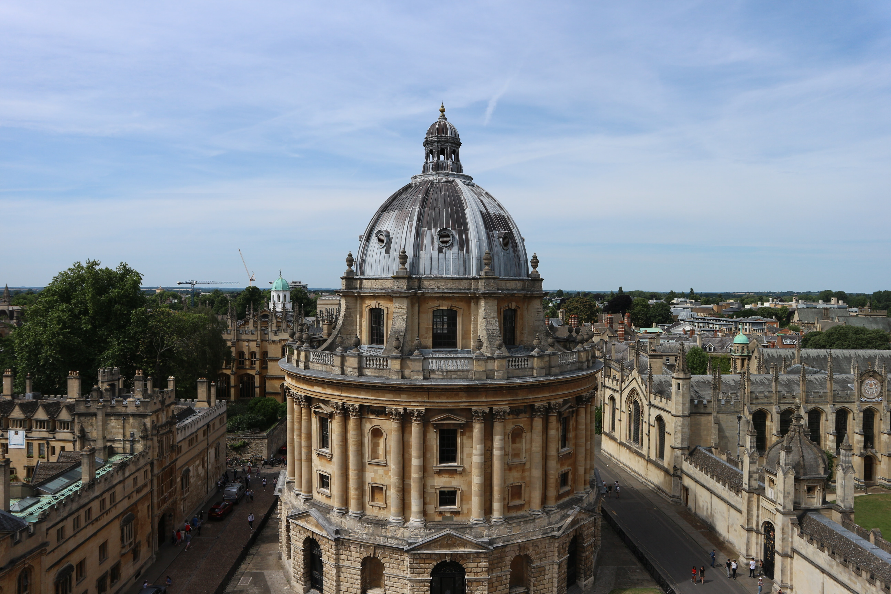

Larby Sy College started out as an ambition, and was built out of the founder’s dream, Dr. Larby Jace Silvestre Mendoza, the current president of the institution, in 2020 with the support of the respected association from the Department of Technology in Quezon City University. The College was founded upon the enactment of the Ordinance No. 0000, approved by Juan Dela Cruk, the mayor of the City of Quezon in March 2020, allocating P4M to establish the college. The Board of Regents, which is the governing body of the University, was formally formed in the same year as Mayor Juan Dela Cruk appointed its members. The university regents were sworn into office on 9th of January 2021 which eventually conducted its first official board meeting and the election of its officers on 2nd of February 2021 at the Quezon City Hall. The composition of the first Board of Regents were: Dr. Larby Jace Silvestre Mendoza, the President of founder and current President of Larby Sy College; Juan Dela Cruz, CHED Comissioner; Juan Dela Cruk, the current Mayor of Quezon City; Juan Dela Crux, the President of Alumni Association. Dr. Larby Jace Mendoza was elected as LSC’s pioneer president, endowed with a herculean task of charting the roots of excellence that was to be the Pamantasan that is known today.
And as solemnly endeared and inscribed by every QCU member to his heart, the University formally opened the University College on Monday, 30 February 2021 with the outstanding and bright scholars carefully selected from the upper 10% of the various public high schools in Quezon. And upon the years of the establishment of the educational institution. The College prove that the students and graduates nurtured their talents, them being accepted and hired by known industries in our country as well as foreign companies.
Dr. Jomar Ariate
Dr. Larby S, Mendoza
LSC Providing Community Of Holistically Developed 21st Century Skilled and Values Laden Individuals Living Out A Life Committed To Serve The Filipino Society And Contribute To The World’s Community.
A Highly Esteemed Educational Institution With Its Merit In Advancement Of Technology And Cultivation Of Talents And Skills.